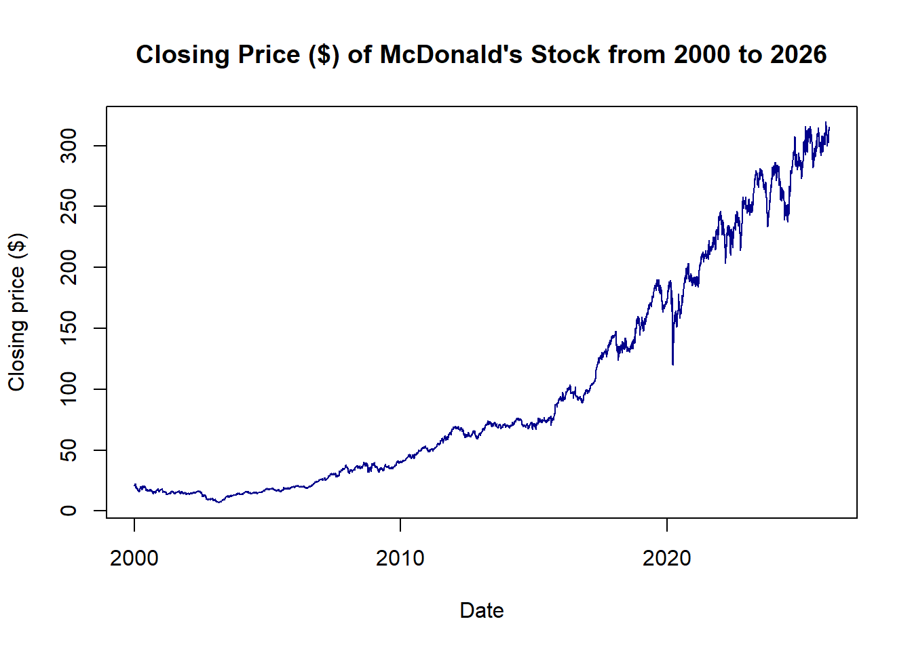
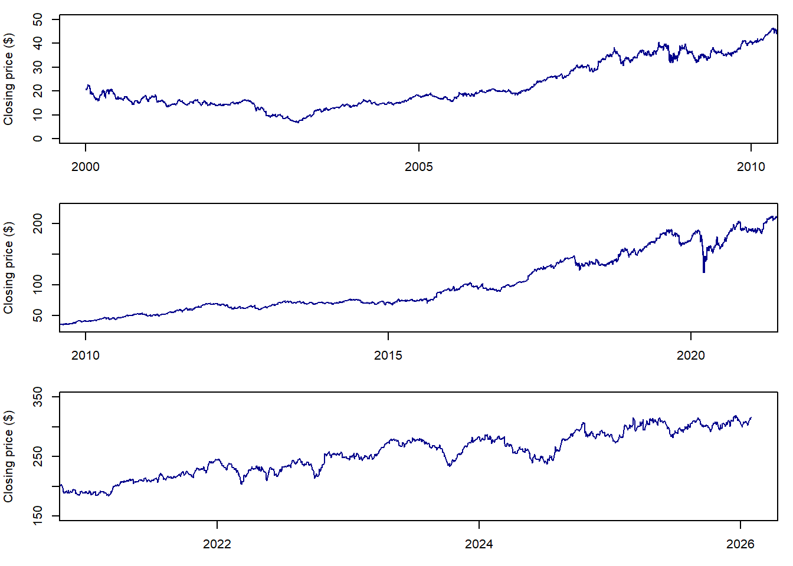
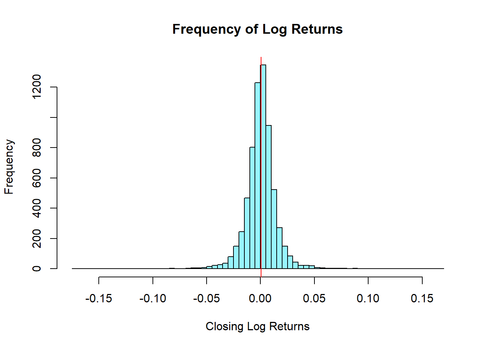
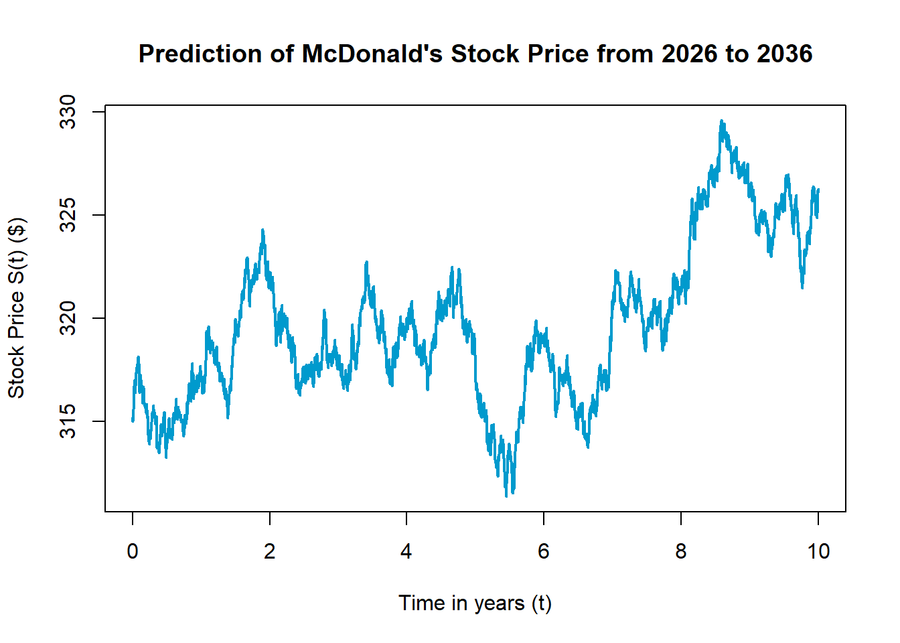
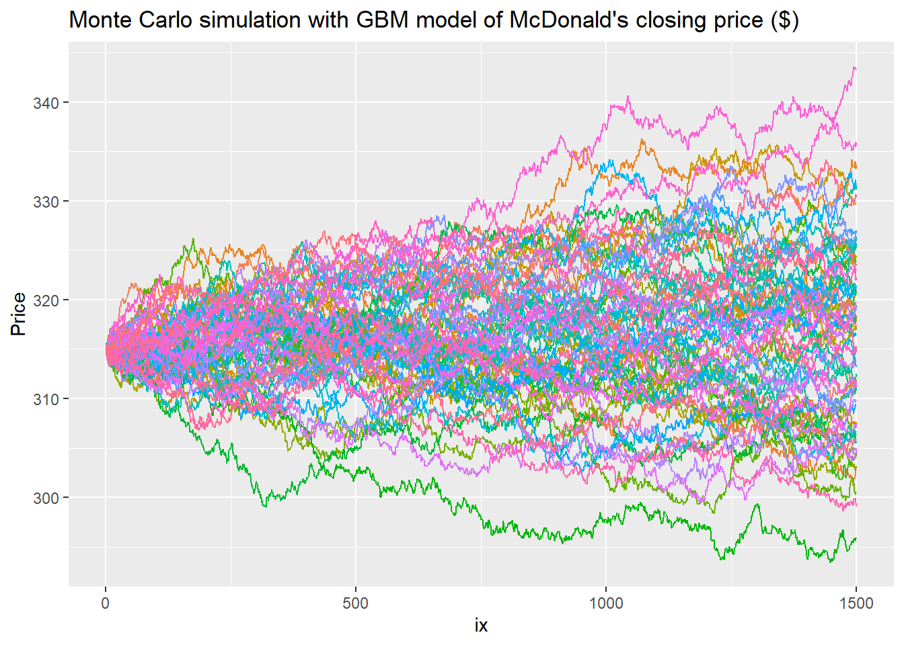
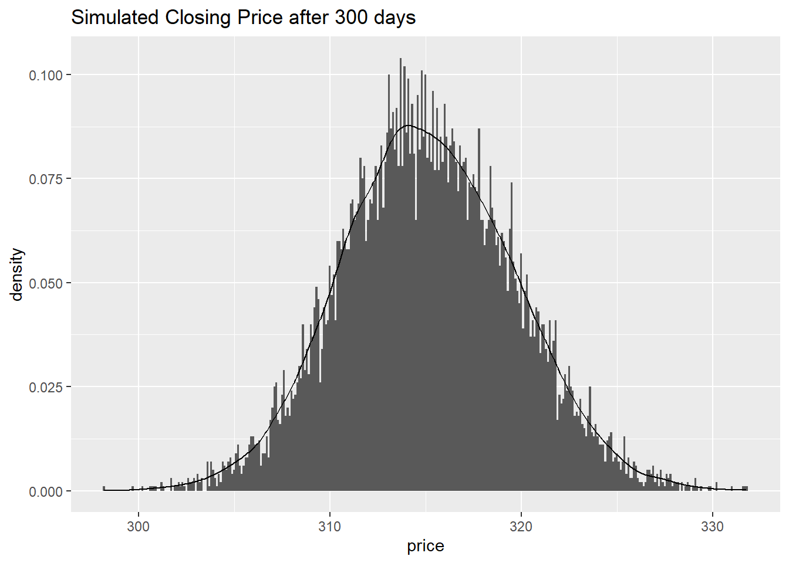
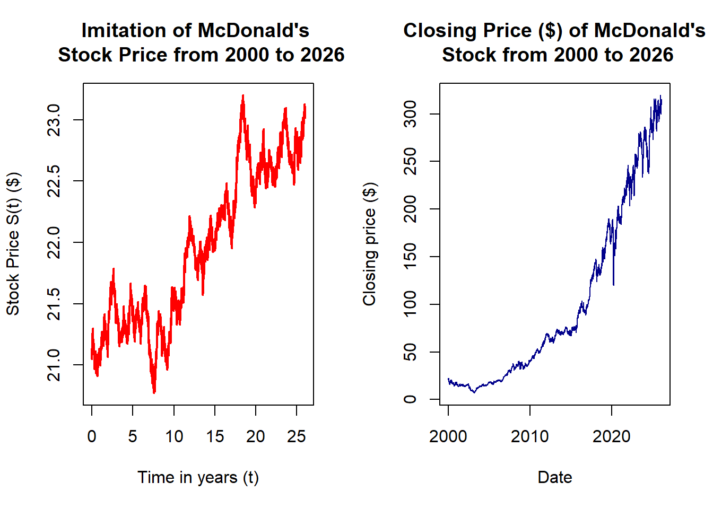

plot(x = MCD_DB$Date, y = MCD_DB$Close, type = "l", col = "blue4",
xlab = "Date", ylab = "Closing price ($)", main = "Closing Price ($) of McDonald's Stock from 2000 to 2026")
Financial markets are inherently stochastic, with numerous interconnected factors influencing stock prices (Samuelson, 1965). Future prices and volatility are influenced by probability and are random. The uncertainties and risks are higher due to constant price fluctuations, which make financial forecasting in stock markets much more complex but also very important, as future forecasts help investors minimise their losses. Understanding how stock prices move helps improve decision-making and investment allocation by enabling stakeholders to take calculated risks through price forecasting.
McDonald’s has a long history in the market, surviving the 2008 Global Financial Crisis and the inflationary pressures in 2020, and is a global leader in the fast-food industry, making it an ideal choice for financial modelling (Britannica, 2026). Modelling and extrapolating McDonald’s Corporation’s historical and future stock price movements can be done using the Geometric Brownian motion (GBM) model. Geometric Brownian Motion is a widely used financial modelling method that assumes stock prices follow a continuous random process with constant volatility and drift (Reddy & Clinton, 2016).
Attempting to predict future stock prices using a Monte Carlo simulation with GBM can help estimate future risk and inform more informed decisions about how future stock prices will move (Reddy & Clinton, 2016). With this methodology in place, a prediction of McDonald’s future stock prices can be made, along with an estimate of risk, by using the high variability in McDonald’s past stock prices and a stochastic simulation to quantify the risk an investor can take in the future.
When creating the geometric Brownian motion (GBM) model for McDonald’s historical stock data, changes were needed to the proposed methodology because it differs from the recommended GBM modelling approaches. The proposed methodology used the difference between the day’s high and low prices as the volatility. Volatility in historical stock data is typically the standard deviation (Adkins, 2026). As well as that, using log returns instead of simple returns to calculate the drift (expected return) (Ross, 2014).
The revised methodology for the GBM model is as follows. Using a closed-form solution to the stochastic differential equation as:
\[ S_t = S_0 \exp((\mu - \frac{\sigma^2}{2})t + \sigma W_t \]
Where:
\(S_0\): initial price,
\(\mu\): drift or expected return,
\(\sigma\): volatility or standard deviation,
\(W_t\): the standard Weiner process,
\(t\): time steps of the time set \(T\)
There are many ways to calculate returns, including the simple and the continuously compounded (logarithmic) methods. To calculate log returns for each closing value of each specific trading date, a formula is used.
\[ \text{Log Returns} = \ln(\frac{V_{t+1}}{V_t}) \]
Where:
\(V\): value of closing price,
\(t\): specific trading date.
(Panna, 2017)
The log returns of the closing price are normally distributed, and both the drift and volatility can be calculated from them.
\[ \ln(\frac{V_t}{V_0})\sim N((\mu-\frac{\sigma^2}{2})t, \sigma^2t) \]
(Wiwatanapataphee, 2026)
The remaining variables needed for the closed-form solution for GBM can be obtained from the dataset. The initial price when predicting future stock prices can be taken as the very last historical closing price, so it can be used to directly continue after the historical prices. After defining all the variables, a completed model can be run against it.
Monte Carlo simulation is a method that uses stochastic variables rather than fixed ones (Bonate, 2001). It produces multiple trials of a process that can be analysed using value-at-risk (VaR) models. Now that a fully defined geometric Brownian motion model exists, it can serve as the basis for a Monte Carlo simulation. Repeatedly simulating the GBM model with the Wiener process acting as the stochastic variable, then storing it for plotting and analysis. The Monte Carlo trials will produce a distribution of hypothetical future stock prices. The Monte Carlo simulation assumes a perfect, efficient market in which stock price movements follow a statistical distribution based on historical data, but in real life, market crashes are unpredictable (Cheung & Powell, 2013). Generating 10,000 independent simulations ensures that the resulting data is large and reliable.
The value-at-risk (VaR) at the 95% confidence level will be calculated, representing the maximum expected loss under normal market conditions (McNeil et al., 2015).
To find VaR, the 10,000 simulated price paths can be plotted and arranged in ascending order. The mathematical quantile function is then applied to the sorted simulated prices to compute the Monte Carlo VaR at the 95% confidence level. The fifth percentile tail boundary is isolated to find VaR\(_{0.95}\) (Glasserman et al., 2000). Out of the 10,000 distributions, the formula identifies the 500th path with the worst performance as the maximum possible loss for an investor under normal market conditions. In RStudio, the discrete value at the 95th percentile of the simulated losses is obtained using the quantile function (Alexander, 2008).
Another way to validate a model is to compare historical and simulated data. This provides a direct comparison to assess whether the model can accurately mimic stock movements. This validation has limitations, as it does not account for real-world effects on stocks, such as inflation, market crashes, and war.
The chosen data is from a constantly updated database. It is the historical stock price of McDonald’s for the past 26 years, from 2000 to 2026.
The set of data includes columns of:
Date: the specific trading day (MM/DD/YYYY),
Close: the closing price of the stock,
High: the highest price the stock reached during the trading day,
Low: the lowest price that stock dropped to during the trading day,
Open: the opening (initial) price of the stock of the trading day, and
Volume: the volume of the shares traded during the day.
The closing data will be the column most utilised in the methodology, as most stock analyses use the closing price because it is considered the most accurate value on the specific trading day (Hayes, 2023).
Since the beginning of the monitored stock prices in 2000, the closing price has steadily risen from the initial price of USD$21.04. When graphing the closing prices of McDonald’s stock against the dates, some obvious dips are visible in the figure below (Figure 1.1).
plot(x = MCD_DB$Date, y = MCD_DB$Close, type = "l", col = "blue4",
xlab = "Date", ylab = "Closing price ($)", main = "Closing Price ($) of McDonald's Stock from 2000 to 2026")
A significant dip in the closing price is evident around 2020. This can be attributed to the global pandemic, when the panic at the start of COVID-19 prompted many investors to sell their stocks simultaneously, triggering a market crash (Chau, 2021). These external effects can heavily skew the performance of real-world stocks and lead to extremely high volatility. Fortunately, GBM introduces randomness by adding the standard Wiener process. This is a continuous-time, continuous-state stochastic process added to the GBM equation.
To accurately forecast stock prices, there are different simulation techniques. This report is based on Geometric Brownian Motion to simulate future price paths for McDonald’s Corporation stock.
In traditional time series models, the future price simulation is based on the past observations, and is perfect for a short-term linear trend, as it predicts a single deterministic path but it smooths out the market volatility. On the other hand, GBM works by splitting the asset price paths into a deterministic drift and adding randomness by a Wiener process.
Even though GBM is a stochastic simulation tool, it is still heavily based on the historical data. Just as with time-series modelling, GBM is based on parameters estimated from historical data. The \(S_0\): initial price, \(\mu\): drift (expected return), and \(\sigma\): volatility (standard deviation) are all estimated from the past financial data (Reddy & Clinton, 2016).
The simulation is created by feeding this real-world data into the mathematical formula, and the model is then used to generate 10,000 future paths (Sinha 2024). The solution is not merely random noise but backed up by McDonald’s historical data. The solution offers multiple options to investors instead of a single guess, which could be wrong in the face of a market shock. This model also allows value-at-risk to be calculated, which represents the worst possible outcomes for the investor, whereas the time-series model provides only one best guess, which might not hold true (Wipplinger, 2007).
The raw data set was imported from Kaggle in the .csv file type from https://www.kaggle.com/datasets/hassanjameelahmed/mcdonalds-mcd-historical-stock-data-analysis
The data needs to be edited to be able to be applied to the model.
When starting the implementation of the methodology, edits had to be made to the data to ensure that it could be applied and utilised in the methodology. Since the coding language, R, requires a specific formatting to be able to recognise the data type “date,” the Date column format needs to be adapted for R. Unfortunately, after extensive research, the change to the original format was not able to be done in R. It has been edited in Excel to ensure it is in the format YYYY-MM-DD.`
Date Close High Low Open Volume
1 2000-01-03 21.04138 21.27370 20.67631 21.20733 4520600
2 2000-01-04 20.60993 21.00819 20.37761 20.87543 4216500
3 2000-01-05 20.94181 21.43963 20.60993 20.60993 5231600
4 2000-01-06 20.64312 20.90862 20.54355 20.77587 4809400
5 2000-01-07 21.17413 21.24050 20.64311 20.70949 5124700
6 2000-01-10 21.27369 21.77152 21.10775 21.24051 4113900When imported, the data type for the Date column is a string, it had to be transformed into the “date” data type. This can be done using the function as_date from the package “lubridate.”
#using the lubridate function as_date to ensure that the imported string of date, is the correct data type "date"
MCD_DB$Date <- lubridate::as_date(MCD_DB$Date)
head(MCD_DB) Date Close High Low Open Volume
1 2000-01-03 21.04138 21.27370 20.67631 21.20733 4520600
2 2000-01-04 20.60993 21.00819 20.37761 20.87543 4216500
3 2000-01-05 20.94181 21.43963 20.60993 20.60993 5231600
4 2000-01-06 20.64312 20.90862 20.54355 20.77587 4809400
5 2000-01-07 21.17413 21.24050 20.64311 20.70949 5124700
6 2000-01-10 21.27369 21.77152 21.10775 21.24051 4113900After ensuring the data types had been changed correctly, the Date and Close columns had to be separated from the rest of the data, as the rest of the columns are not needed for this model.
#creating a data table of just the Date and the Closing columns to eliminate all unneeded columns.
MCD_closing <- MCD_DB[c("Date", "Close")]
head(MCD_closing) Date Close
1 2000-01-03 21.04138
2 2000-01-04 20.60993
3 2000-01-05 20.94181
4 2000-01-06 20.64312
5 2000-01-07 21.17413
6 2000-01-10 21.27369The needed columns are now separated into a separate variable named: MCD_closing. With both of the columns being correct data type, a basic data analysis can be performed.
A plot can be created using MCD_closing to view how the raw historical closing price has changed over the 26 years.
plot(x = MCD_closing$Date, y = MCD_closing$Close, type = "l", col = "blue4",
xlab = "Date", ylab = "Closing price ($)",
main = "Closing Price ($) of McDonald's Stock from 2000 to 2026")
This is the same graph as Figure 1.1 that was shown in the Methodology. The closing price increases from USD$21.04139 to USD$315.00 over 26 years and 6,559 open trading days.
This means that there's a daily average increase in price of: USD$ 0.0448176 There are multiple points of unexpected movement, and fluctuations that are expected of stock movement. When magnified and focused on each decade, the most extreme dips in the closing price looks more regular than when all 26 years are shown at once.
par(mfrow = c(3,1), mar = (c(3, 4, 1, 1)))
plot(x = MCD_DB$Date, y = MCD_DB$Close, type = "l", col = "blue4",
xlim = as_date(c("2000-01-03","2009-12-31")), ylim = c(0,50),
xlab = "Date", ylab = "Closing price ($)")
plot(x = MCD_DB$Date, y = MCD_DB$Close, type = "l", col = "blue4",
xlim = as_date(c("2010-01-04","2020-12-31")), ylim = c(30,225),
xlab = "Date", ylab = "Closing price ($)")
plot(x = MCD_DB$Date, y = MCD_DB$Close, type = "l", col = "blue4",
xlim = as_date(c("2020-12-31","2026-01-30")), ylim = c(150,350),
xlab = "Date", ylab = "Closing price ($)")
Each separate plot looks relatively even and regular, even with the large difference between the initial price and the ending price.
A 5 number summary can be performed as an extremely basic data analysis.
summary(MCD_closing) Date Close
Min. :2000-01-03 Min. : 6.766
1st Qu.:2006-07-12 1st Qu.: 20.727
Median :2013-01-16 Median : 68.245
Mean :2013-01-15 Mean :100.093
3rd Qu.:2019-07-23 3rd Qu.:164.342
Max. :2026-01-30 Max. :319.650 To start with creating a GBM model, the log returns of the closing prices must be calculated and put into a new data frame.
#make a data frame just for daily returns
MCD_daily_logreturns <- PerformanceAnalytics::Return.calculate(MCD_closing,
method = c("log"))
head(MCD_daily_logreturns) Close
2000-01-03 NA
2000-01-04 -0.020718245
2000-01-05 0.015974669
2000-01-06 -0.014365679
2000-01-07 0.025398141
2000-01-10 0.004691293This table shows the first 6 rows of the newly created MCD_daily_logreturns data frame.
The function: Return.calculate is used from the “PerformanceAnalytics” package. This is a function that will create the returns for all the closing prices in a data frame and output the results into a new data frame. The method is chosen as”log” as log returns are needed for GBM.
As seen in the previous table, there is an NA value. This happens because log returns are based on the current and previous closing price. Since the first closing price has no previous price to calculate log returns with, it returns a NA value, or missing data. So, the first column needs to be removed so it can be easily handled.
#omitting the NA value that was created from
#calculating log returns
MCD_daily_logreturns <- na.omit(MCD_daily_logreturns)
head(MCD_daily_logreturns) Close
2000-01-04 -0.020718245
2000-01-05 0.015974669
2000-01-06 -0.014365679
2000-01-07 0.025398141
2000-01-10 0.004691293
2000-01-11 0.023130864This table shows the updated MCD_daily_logreturns data frame with no NA values.
Now with log returns being calculated, it can be demonstrated that it is normally distributed.
hist(MCD_daily_logreturns$Close, breaks = 100, col ="cadetblue1",
xlab = "Closing Log Returns",
main = "Frequency of Log Returns")
#Adding a line for the mean to view the normality of the graph
abline(v = mean(MCD_daily_logreturns$Close), col = "red")
The histogram does look mostly normal, but slightly skewed with the smaller number of breaks. If the number of breaks increases, it looks a like a regular normal probability distribution. With the red line representing the mean, it makes it easier to view the normality of the graph.
Now that the log returns have been calculated, the drift and the volatility can be calculated from it.
The drift, or \(\mu\), is the expected return of the log returns. This can be calculated by using the mean function. The volatility, or \(\sigma\), is the standard deviation of the log returns. This can be calculated by using the sd function.
drift <- mean(MCD_daily_logreturns$Close)
volatility <- sd(MCD_daily_logreturns$Close)The drift or expected return of the historical returns is: 0.0004126382 The volatility or the standard deviation of the historical returns is: 0.01430238 The last variable that is needed is the initial price, \(S_0\). To predict future stocks, the last closing price will be used for the initial price.
S0 <- tail(MCD_closing$Close, n = 1)The initial price taken from the last closing price is: USD$ 315 Now the geometric Brownian motion model can be developed in full. Setting the seed to 123456 so that this implementation can be replicated.
\(\ T\) is the time period in years, which can be any amount of time that the stocks will be extrapolated to.
\(\ n\) is the number of time steps that the stock price will take in \(\ T\) amount of years.
\(\ t\) is the full set of time steps from 0 to \(T\).
set.seed(123456)
#set parameters
S0 <- tail(MCD_closing$Close, n = 1)
drift <- mean(MCD_daily_logreturns$Close)
volatility <- sd(MCD_daily_logreturns$Close)
T <- 10 #time period in years
n <- 3500 #number of timesteps in years
dt <- T / n
t <- seq(0, T, length.out = n + 1)
#Simulating the standard Weiner process to add the stochastic nature
W <- c(0, cumsum(rnorm(n, mean = 0, sd = sqrt(dt))))
#simulate the geometric Brownian motion
S <- S0 * exp((drift - 0.5 * volatility^2) * t + volatility * W)
plot(t, S, type = "l", lwd = 2, col = "deepskyblue3",
xlab = "Time in years (t)", ylab = "Stock Price S(t) ($)",
main = "Prediction of McDonald's Stock Price from 2026 to 2036")
The Weiner Process is added to to the process to add the stochastic nature. It is made from creating a random normal probability distribution, \(n\) number of times, with the mean ( \(\mu\) ) being 0 and the standard deviation ( \(\sigma\)) being the square root of the time period divided by the number of time steps.
This single simulation appears to imitate the way stock prices move over time, with the start of the movement from the initial price of USD$315. It slowly trends upwards due to the positive drift and the ending price after 10 years and 3500 time steps is around $327 and had many random fluctuations due to the volatility.
Now that the model has been created and fully defined, trails can be run against it in a Monte Carlo Simulation.
Monte Carlo simulation can now be run with the geometric Brownian motion model as the base. Repeatedly running the GBM model and storing the results of the stochastic model into a matrix, then plotting each result in a single plot. This code was heavily taken from Longmore (2020)’s website article on “Efficiently Simulating Geometric Brownian Motion in R.” It has been slightly edited to include the model that has already been created.
set.seed(1234567)
simGBM <- function(nsim, T, n, drift, volatility, S0){
dt = T / n
#create a matrix for the stored GBM simulations
gbm <- matrix(ncol = nsim, nrow = n)
for (sim in 1:nsim) {
#initialise the row 1, column 1 as the initial price
gbm[1, sim] <- S0
#nested for loop
for (day in 2:n) {
#standard Weiner Process
W <- rnorm(1, mean = 0, sd = sqrt(dt))
#Geometric Brownian motion process
gbm[day, sim] <- gbm[(day - 1), sim] *
exp((drift - 0.5 * volatility^2) * dt + volatility * W)
}
}
return(gbm)
}This is a walk-through of the steps taken for the Monte Carlo simulation with geometric Brownian motion.
The seed has been set to “1234567” to be able to reproduce the results accurately.
\(nsim\): number of simulations
\(T\): the number of years
\(n\): the amount of time steps in the given amount of years
\(drift\) or \(\mu\): the expected return of the historical data
\(volatility\) or \(\sigma\): the standard deviation of the historical data
\(S_0\): initial price
set.seed(1234567)
nsim <- 70
T <- 5
n <- 1500
drift <- mean(MCD_daily_logreturns$Close)
volatility <- sd(MCD_daily_logreturns$Close)
S0 <- 315
gbm <- simGBM(nsim, T, n, drift, volatility, S0)
gbm_df <- as.data.frame(gbm) %>%
mutate(ix = 1:nrow(gbm)) %>%
pivot_longer(-ix, names_to = 'sim', values_to = 'Price')
gbm_df %>%
ggplot(aes(x = ix, y = Price, color = sim)) +
geom_line() +
labs(title = "Monte Carlo simulation with GBM model of McDonald's closing price ($)") +
theme(legend.position = 'none')
The data frame that was created from the simGBM can be piped into the ggplot function, which can make code easier to understand.
Using ggplot to aid in construction the plots of all of the simulated GBM processes which has been put into a data frame: gbm_df. The plotted lines represent each individual simulation of the created GBM model. The stochastic nature of the Weiner process allows so many different outcomes of geometric Brownian motion and can be seen easier in this visualisation.
This function can also be plotted to view the distribution of the predicted prices. From his distribution, the value-at-risk can be calculated. The distribution of simulated GBM stocks are log-normally distributed.
After both the geometric Brownian motion Model and the Monte Carlo simulation model are completed, validation must be performed to interpret results and ensure that the models created are accurate or efficient.
A larger amount of simulations should be run for validations, to ensure that the results can be as accurate as possible. Choosing an arbitrary time for the stocks to be predicted. One year with 300 days that the stock will be able to be traded in the year (time steps). The distribution graph will show the simulated price after one year (300 time steps) and 10,000 simulations.
set.seed(1234567)
nsim <- 10000
T <- 1
n <- 300
drift <- mean(MCD_daily_logreturns$Close)
volatility <- sd(MCD_daily_logreturns$Close)
S0 <- 315
VAR_gbm <- simGBM(nsim, T, n, drift, volatility, S0)After the results have been produced, they can be plot as a histogram so view how the results have been distributed.
data.frame(price = VAR_gbm[n, ]) %>%
ggplot(aes(x = price)) +
geom_histogram(aes(y = after_stat(density)), binwidth = 0.1)+
geom_density() +
ggtitle("Simulated Closing Price after 300 days")
The histogram appears to be slightly skewed to the left. This skew will only get more aggressive with a higher number of simulations.
The closing price after 300 days will be sorted in ascending order to find the value-at-risk at a 95% confidence interval (Dixon, 2022).
sorted_VaR <- data.frame(price = VAR_gbm[n, ]) %>%
arrange(price)
head(sorted_VaR) price
1 298.2111
2 299.7338
3 300.2392
4 300.6184
5 300.6987
6 300.7820Now that the last closing price has been sorted into ascending order, the quantile function can be utilised to find the value at 5% out of 10,000 simulations.
VaR5 <- quantile(sorted_VaR$price, 1-0.95)The value at risk at the 95% confidence level is: $ 307.91 Because the starting price was USD$315, and the value at a 95% confidence level is USD$307.91, the potential loss on each share bought of McDonald’s can be calculated.
VaR_Loss <- 315- VaR5The potential loss on each McDonald's share after one year is: $ 7.09 One way of validating the stochastic model is to put it against the original stock data. This is a direct comparison to see if the model can imitate the historical data.
set.seed(123456)
#set parameters
S0 <- 21.05 #Using the same starting price as the historical stocks at 03/01/2000
drift <- mean(MCD_daily_logreturns$Close)
volatility <- sd(MCD_daily_logreturns$Close)
T <- 26 #The year ending in 2026
n <- 6559 #The amount of time steps during 2000 and 2026
dt <- T / n
t <- seq(0, T, length.out = n + 1)
#Simulating the standard Weiner process to add to the Brownian Motion
W <- c(0, cumsum(rnorm(n, mean = 0, sd = sqrt(dt))))
#simulate the geometric Brownian motion
S <- S0 * exp((drift - 0.5 * volatility^2) * t + volatility * W)
par(mfrow = c(1, 2))
plot(t, S, type = "l", lwd = 2, col = "red",
xlab = "Time in years (t)", ylab = "Stock Price S(t) ($)",
main = "Imitation of McDonald's \n Stock Price from 2000 to 2026")
plot(x = MCD_closing$Date, y = MCD_closing$Close, type = "l", col = "blue4",
xlab = "Date", ylab = "Closing price ($)", main = "Closing Price ($) of McDonald's\n Stock from 2000 to 2026")
Looking back at the side-by-side historical vs simulated graphs in the validation, even though the graphs look relatively similar in angle, the scale is completely different. From the graph on the left in red, the Imitation of McDonald’s Stock Price from 2000 to 2026, the scale goes from $21 to $23. This is completely different from the historical stock graph in blue, which goes from 0 to over $300. From the comparison of the scale of the graphs alone, it can be seen that the simulation is not an accurate imitation of the historical data. This happens because of the real world effects on historical stocks. Inflation is a key affector on stock prices. There is no obvious linear relationship between inflation and stock prices, but stocks tend to perform better during periods of higher inflation (Zucchi, 2024). The historical stocks have performed a lot better than the simulated stocks and follows a much different trending line. This can be a testament to how accurate the simulation model is when trying to predict future stocks.